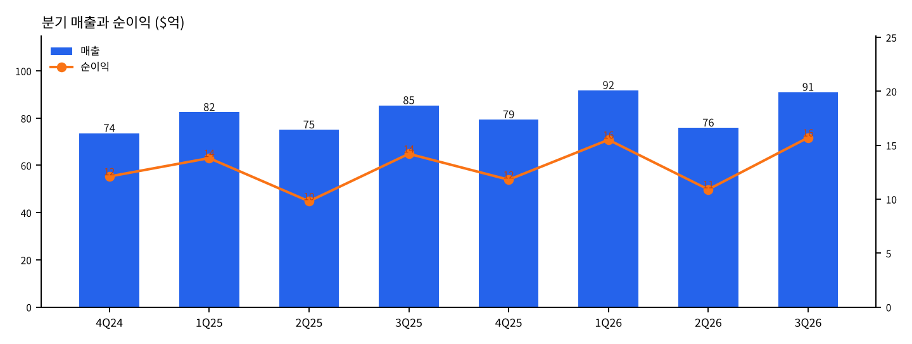
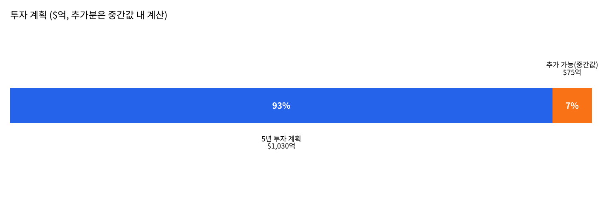
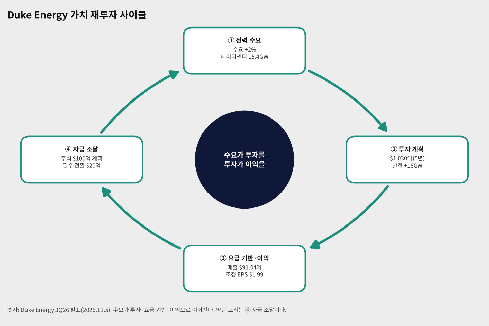

Duke Energy는 지역 독점으로 전력을 팔고 설비 투자액에 대한 허용 수익을 받는다. 데이터센터와 제조업 수요가 투자 확대를 부른다.
| 항목 | 내용 |
|---|---|
| 종목 | Duke Energy (DUK) · NYSE · 전력·가스 유틸리티 · 노스캐롤라이나 샬럿 |
| 최근 분기(3Q26) | 매출 $91.04억, 조정 EPS $1.99 |
| 핵심 사업 | 전력·인프라, 가스·인프라 |
| 직원 수 | (트레이딩뷰 값 없음) |
| 멀티플 | PER·PEG·P/S는 08~10 항목 표 참조 |
| 직책 | 인물 | 역할·특징 |
|---|---|---|
| CEO | 해리 시데리스(Harry Sideris) | 전력 수요 증가와 데이터센터 전환 협상을 설명 |
| CFO | 브라이언 사보이(Brian Savoy) | 전력 수요 +2%와 자금 조달 계획을 설명 |
경영 스타일: 장기 투자 + 요금 회수. 투자 계획을 길게 세우고 규제 승인을 통해 회수한다.
가스·원자력·재생에너지로 2031년까지 16GW를 추가한다.
15.4GW 파이프라인을 2027년 상반기까지 계약으로 바꾸려 한다.
다음 실적발표는 세 가지 질문에 답하는 자리다.
1. 데이터센터 계약이 체결되나?
2. 주식 조달을 순조롭게 하나?
3. 2028년부터 상반부 성장을 하나?
한 줄 판정 규칙: 첫 질문(데이터센터 계약)이 체결되면 약한 고리인 ② 자금 조달이 핵심 변수가 된다.
일정: 4Q26 실적 발표는 2027.02.11 예정(트레이딩뷰). 투자 계획 갱신이 함께 나올 수 있다.
| 분기 | 매출 | 순이익 | EPS | 조정 EPS | 특이 사항 |
|---|---|---|---|---|---|
| 4Q24 | $73.6억 | $12.1억 | 1.55 | 1.66 | |
| 1Q25 | $82.5억 | $13.8억 | 1.75 | 1.76 | |
| 2Q25 | $75.1억 | $9.8억 | 1.25 | 1.25 | |
| 3Q25 | $85.4억 | $14.2억 | 1.81 | 1.81 | |
| 4Q25 | $79.4억 | $11.8억 | 1.50 | 1.50 | |
| 1Q26 | $91.8억 | $15.5억 | 1.97 | 1.93 | |
| 2Q26 | $75.9억 | $10.9억 | 1.38 | 1.43 | |
| 3Q26 | $91.0억 | $15.7억 | 1.99 | 1.99 | 전력 수요 +2%(2022년 이후 최고), 가이던스 범위 좁힘 |
매출은 트레이딩뷰 스캐너의 분기 총매출이라 회사가 발표한 순매출과 다를 수 있다. Duke Energy는 3Q26 GAAP EPS와 조정 EPS가 같다($1.99). 매출·순이익·EPS(GAAP 희석)는 트레이딩뷰 스캐너, 조정 EPS는 트레이딩뷰 실적 페이지의 Reported 값이다. 분기 정렬은 오래된 분기→최신이다.

흐름 요약: 최근 분기 매출은 $91.0억로 전년 동기 $85.4억 대비 +6.6%, 순이익은 $15.7억(전년 $14.2억)다. 최근 4분기 GAAP EPS는 $6.84, 조정 EPS는 $6.85다.
| 항목 | 내용 | 금액 | 비고 |
|---|---|---|---|
| 5년 투자 계획 | 2026~2030 | $1,030억 | 회사 발표 |
| 추가 투자 가능(중간값, 내 계산) | 대형 부하 관련 | $75억 | $50~100억의 중간 |

5년 투자 계획의 규모가 커서 이자·자금 조달이 EPS 성장의 변수가 된다.
Duke Energy는 고객에게 안정적이고 깨끗한 전력을 공급하는 것을 목표로 한다.
| 축 | 내용 |
|---|---|
| 투자 | $1,030억(5년) |
| 발전 | 2031년까지 16GW |
| 성장 | 연 5~7% EPS |

| 이동평균 | 값 | 종가 대비 | 위치 |
|---|---|---|---|
| 5일선 | $129.69 | -0.7% | 종가 아래 |
| 20일선 | $127.81 | +0.8% | 종가 위 |
| 50일선 | $121.41 | +6.1% | 종가 위 |
| 100일선 | $122.85 | +4.8% | 종가 위 |
| 200일선 | $125.00 | +3.0% | 종가 위 |
52주 고가 $134.49(2026-03-17)·저가 $112.40(2026-09-29) 범위에서 종가 $128.79는 20일선, 50일선, 100일선, 200일선을 웃돌고 5일선은 밑돈다.
| 규칙 | 기준 | 현재 값 | 신호 |
|---|---|---|---|
| 장기 추세 필터 | 종가 vs 200일선 | $128.79 > $125.00 | 매수 |
| 중장기 교차 | 50일선 vs 200일선 | $121.41 < $125.00 | 매도 |
| 단기 교차 | 20일선 vs 50일선 | $127.81 > $121.41 | 매수 |
| 돈키언 채널 | 55일 고가 $132.99 / 저가 $112.40 | 중간값 $122.70 위 | 매수 |
| 1개월 모멘텀 | 21거래일 수익률 | +6.7% (기준 $120.67) | 매수 |
| 3개월 모멘텀 | 63거래일 수익률 | +7.5% (기준 $119.85) | 매수 |
| 6개월 모멘텀 | 126거래일 수익률 | +3.3% (기준 $124.66) | 매수 |
| 12개월 모멘텀 | 252거래일 수익률 | +4.0% (기준 $123.80) | 매수 |
| 종합 (8개 평균) | +0.75 | 강한 매수 |
해석: 매수 신호 7개(장기 추세 필터, 단기 교차, 돈키언 채널, 1개월 모멘텀, 3개월 모멘텀, 6개월 모멘텀, 12개월 모멘텀), 매도 신호 1개(중장기 교차). CTA 점수 +0.75(강한 매수). 14일 ATR $2.37 (1.8%), 52주 고가 $134.49 · 저가 $112.40.
| 가격 | 기준 | 무엇이 바뀌나 |
|---|---|---|
| $132.99 | 55일 고가 | 돌파 시 채널 상단 갱신 |
| $125.00 | 200일선 | 종가가 이 선 위/아래인지로 장기 추세 신호가 바뀜 |
| $124.66 | 6개월 모멘텀 기준가 | 종가가 이 가격 위면 6개월 신호 매수 |
| $123.80 | 12개월 모멘텀 기준가 | 종가가 이 가격 위면 12개월 신호 매수 |
| $122.70 | 돈키언 중간값 | 55일 채널 중간값 위/아래로 신호가 바뀜 |
| $120.67 | 1개월 모멘텀 기준가 | 종가가 이 가격 위면 1개월 신호 매수 |
| $119.85 | 3개월 모멘텀 기준가 | 종가가 이 가격 위면 3개월 신호 매수 |
| $112.40 | 55일 저가 | 이탈 시 채널 하단 갱신 |
가격 수준은 신호가 바뀌는 기준선일 뿐 진입·청산 가격 제안이 아니다. 20일/50일 교차는 이동평균 자체가 움직여 단일 가격으로 표시하지 않았다. 일봉·주봉은 종가 기준 직접 계산(고저 데이터 미사용)이다.
| 악재 요인 | 내용 | 강도 |
|---|---|---|
| 자금 조달 | 주식 조달 $100억, 필수 전환 증권 발행 | 중간 |
| 계약 지연 | 데이터센터 협상 연장 | 중간 |
| 규제 | 요금 승인 절차 | 참고 |
| 티커 | 회사 | PER(TTM) | PEG | P/S | EPS 성장(YoY) |
|---|---|---|---|---|---|
| DUK | Duke Energy | 18.8배 | 3.29 | 2.96배 | +6% |
| SO | Southern Company | 21.4배 | 2.53 | 3.51배 | +9% |
| NEE | NextEra Energy | 15.3배 | 0.20 | 6.06배 | +76% |
| AEP | American Electric Power | 20.7배 | – | 2.95배 | -10% |
| D | Dominion Energy | 22.1배 | 8.64 | 3.03배 | +3% |
비교 결론: Duke Energy의 PER 18.8배는 Southern·American Electric Power·Dominion보다 낮고 NextEra(15.3배)보다 높다. PEG 3.29는 Southern(2.53)보다 높고 Dominion(8.64)보다 낮다.
현금·부채는 트레이딩뷰 스캐너 값이다. 유틸리티라 부채가 매우 크다.
| 지표 | 값 | 출처 | 해석 |
|---|---|---|---|
| 현금·단기투자 | $5억 | 트레이딩뷰 스캐너(최근 분기) | |
| 총부채 | $938억 | 트레이딩뷰 스캐너(최근 분기) | |
| 순부채(부채−현금) | $933억 | 내 계산 | 현금 대비 부채 부담 |
| 잉여현금흐름(TTM) | $-51억 | 트레이딩뷰 스캐너 | |
| TTM 매출 | $338억 | 트레이딩뷰 스캐너 |
| 기준 | 매출 | P/S | 비고 |
|---|---|---|---|
| 내 계산(종가 ÷ 최근 4분기 매출 합계) | $338.1억 | 2.96배 | 시총은 정렬용 데이터에서만 사용 |
| 동종(트레이딩뷰) | – | SO 3.51배 · NEE 6.06배 · AEP 2.95배 · D 3.03배 | 11.19 |
해석: 9개월 영업현금 $78.9억에 비해 투자 지출이 $108억을 넘는다(회사 발표). 차액은 부채·주식으로 채운다(내 해석).
EBITDA는 영업활동의 현금 창출력을 보는 지표이고, PEG는 PER을 EPS 성장률로 나눈 값이다. EBITDA·FCF는 트레이딩뷰 TTM 값이다.
| 지표 | 값 | 산출 |
|---|---|---|
| EBITDA(TTM) | $160억 | 트레이딩뷰 스캐너 |
| EBITDA 마진 | 47.3% | EBITDA ÷ TTM 매출(내 계산) |
| FCF 마진 | -15.1% | FCF ÷ TTM 매출(내 계산) |
| PER(GAAP TTM) | 18.8배 | $128.79 ÷ $6.84 |
| PER(조정 TTM) | 18.8배 | $128.79 ÷ $6.85 |
| 방식 | PER | EPS 성장률 | PEG | 판정 |
|---|---|---|---|---|
| 조정 EPS (TTM $6.85) | 18.8배 | +6% ($6.48 → $6.85) | 3.29 | 기준 초과 |
| GAAP EPS (TTM $6.84) | 18.8배 | +8% ($6.36 → $6.84) | 2.49 | 기준 초과 |
판정: 조정 EPS 기준 PEG 3.29 → 1.0 초과 PEG 기준은 1.0 이하 투자 적격, 0.5 이하 적극 매수다. EPS 성장률은 최근 4분기 EPS 합계를 직전 4분기 합계와 비교한 값(내 계산)이고, 일회성 항목이 있으면 조정 EPS 행을 함께 본다.

Duke Energy의 사이클: 수요가 투자를 부르고 투자가 요금 기반과 이익을 키우며, 이익과 조달이 다시 투자 여력이 되는 순환이다.
| 고리 | 현재 숫자·근거 |
|---|---|
| ① 전력 수요 | 3Q26 전력 수요 +2% · 데이터센터 파이프라인 15.4GW |
| ② 투자 계획 | 2026~2030 투자 $1,030억 · 2031년까지 16GW 추가 |
| ③ 요금 기반·이익 | 매출 $91.04억(+6.6%) · 조정 EPS $1.99 |
| ④ 자금 조달 | 주식 조달 $100억 계획 중 약 3분의 1 완료 |
사이클의 특징: 약한 고리는 ④ 자금 조달이다(주식 조달이 크고 아직 3분의 1만 끝났다). "(내 해석)"은 보고서 수치가 아닌 해석이다.